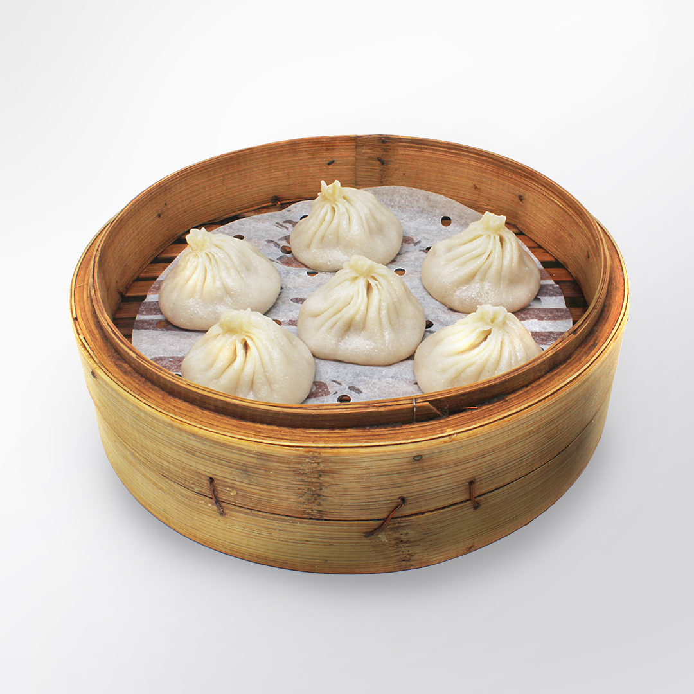
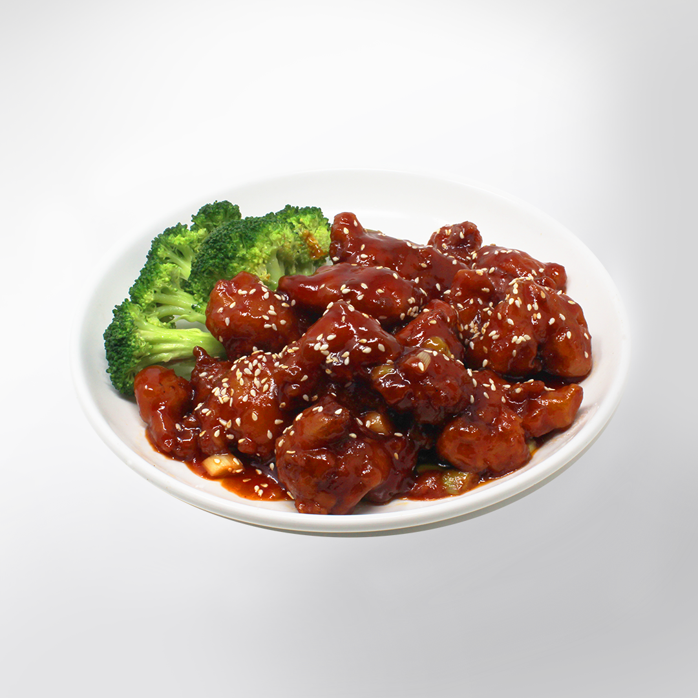
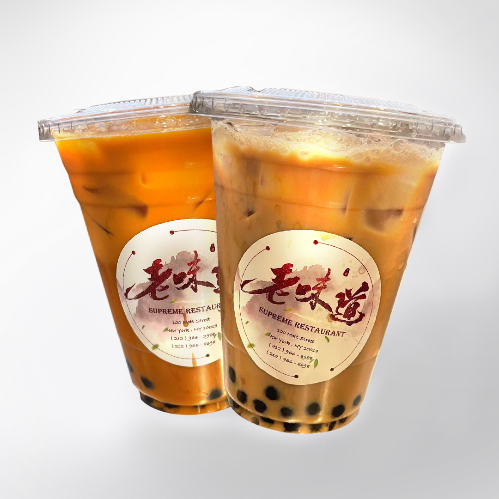

SUPREME RESTAURANT
Located in the heart of Chinatown, NYC

Supreme Restaurant strives to serve authentic Shanghainese cuisine at an affordable price. Our Chinese name, 老味道 (Old Taste), encapsulates our dedication to traditional flavors and culinary heritage — as soon as you enter, you will notice a chef preparing our signature soup dumplings from scratch.

Xiao Long Bao
—
Handmade

Sesame Chicken
—
Timeless

Boba
—
Refreshing